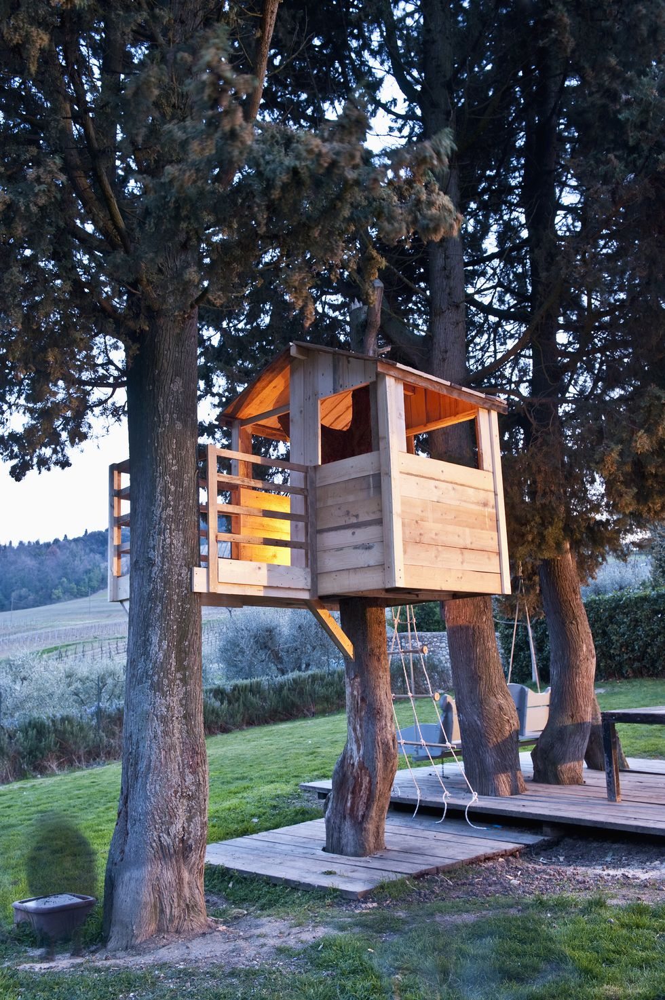

|

|
Tree house in Lidingo
You lucky boy in your tree house
Looking over the garden
Hidden high in the birch tree
With roots anchored in the rocks
And the branches in the wind,
That blows from over the sea.
You lucky boy in your tree house
Sailing high above the island
In a lenient and safe yacht
From where you can see it all
Far beyond the neighbourhood
The moon, the stars and the whole world.
You lucky boy in your tree house...
(c) Remi Feusels
|